11 Kubernetes¶
11.1 Doelstellingen¶
Na dit hoofdstuk beheerst de student het volgende:
-
uitleggen waarvoor een container-orchestrator dient en wanneer Kubernetes zinvol is;
-
de onderdelen van een Kubernetes-cluster benoemen en hun rol beschrijven;
-
het verschil uitleggen tussen k8s, k3s en k3d;
-
de begrippen pod, ReplicaSet, deployment en service correct gebruiken;
-
het verschil uitleggen tussen de imperatieve en de declaratieve werkwijze;
-
een eenvoudig manifestbestand lezen en de belangrijkste velden benoemen;
-
met kubectl een cluster bevragen en objecten aanmaken, tonen en verwijderen;
-
een applicatie uitrollen met een deployment, ze schalen en de self-healing aantonen;
-
een applicatie bereikbaar maken met een service.
11.2 Waarvoor dient Kubernetes?¶
11.2.1 Van losse containers naar orkestratie¶
De tijd dat we manueel containers starten en stoppen is stilaan voorbij. In grotere omgevingen worden containers beheerd door een orchestration tool.
Kubernetes is het belangrijkste opensourceplatform om containergebaseerde applicaties automatisch uit te rollen, te schalen en te beheren. Het zorgt ervoor dat applicaties betrouwbaar draaien op een cluster van computers, ongeacht waar die staan: in de cloud of on-premise.
In de vorige hoofdstukken deed jij dat werk zelf: jij koos op welke server een container draaide, jij startte containers opnieuw op na een crash en jij besliste hoeveel kopieën er draaiden. Precies die taken neemt Kubernetes over.
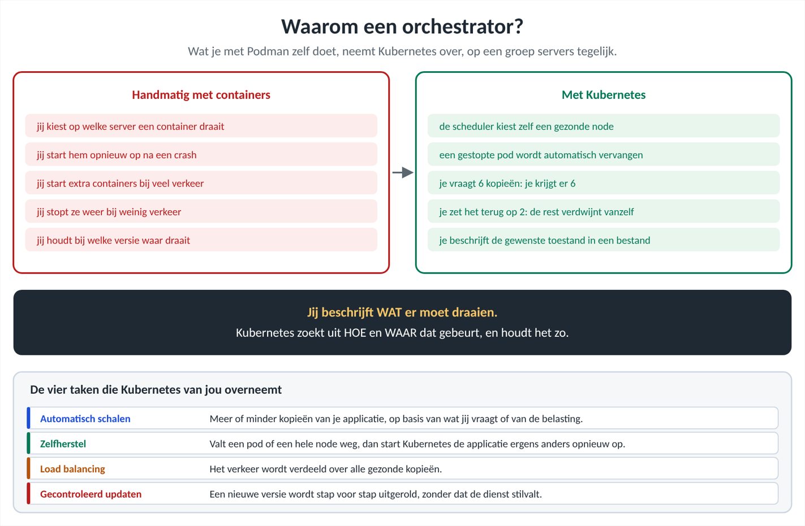
Kubernetes kan onder meer:
-
containers starten en stoppen;
-
op- en afschalen naargelang de vraag;
-
het verkeer verdelen over de beschikbare kopieën van je applicatie (load balancing);
-
zichzelf herstellen bij fouten;
-
een nieuwe versie gecontroleerd uitrollen zonder dat de dienst stilvalt.
Het kernidee is dat jij beschrijft welke toestand je wil, en dat Kubernetes zelf uitzoekt hoe en waar het die toestand bereikt en behoudt.
11.2.2 Wanneer zet je het in?¶
Kubernetes is krachtig, maar het opzetten en onderhouden ervan kost veel werk. Het loont pas wanneer je applicatie uit meerdere onderdelen bestaat en verspreid over meerdere servers moet draaien.
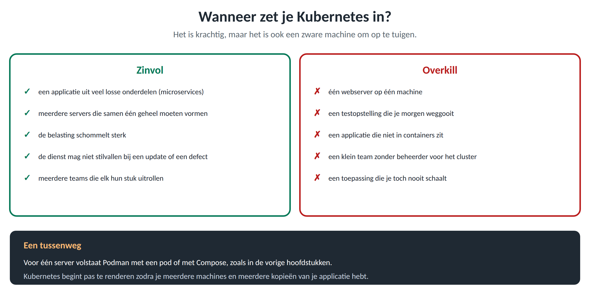
Voor één webserver op één machine volstaat wat je in de vorige hoofdstukken geleerd hebt: een pod of een compose-bestand met Podman.
11.2.3 Alternatieven¶
Kubernetes is niet de enige orchestrator, maar wel veruit de meest gebruikte. Enkele alternatieven:
-
Docker Swarm: eenvoudiger te beheren, maar minder schaalbaar dan Kubernetes;
-
Amazon ECS: de beheerde orchestrator van AWS, populair bij wie volledig in de AWS-cloud werkt;
-
OpenShift: gebaseerd op Kubernetes, ontwikkeld door Red Hat, met extra functionaliteit voor ontwikkelaars en beveiliging.
11.3 Architectuur¶
11.3.1 Cluster en nodes¶
Binnen Kubernetes is een cluster een groep machines die samenwerken om containers te draaien en te beheren. Zo'n machine heet een node. Een node kan een fysieke machine zijn, maar evengoed een virtuele machine in een cloudomgeving.
Er zijn twee soorten nodes. De worker nodes voeren het werk uit: daar draaien de containers. De control plane node coördineert en controleert het cluster: hij beslist wat er waar draait.
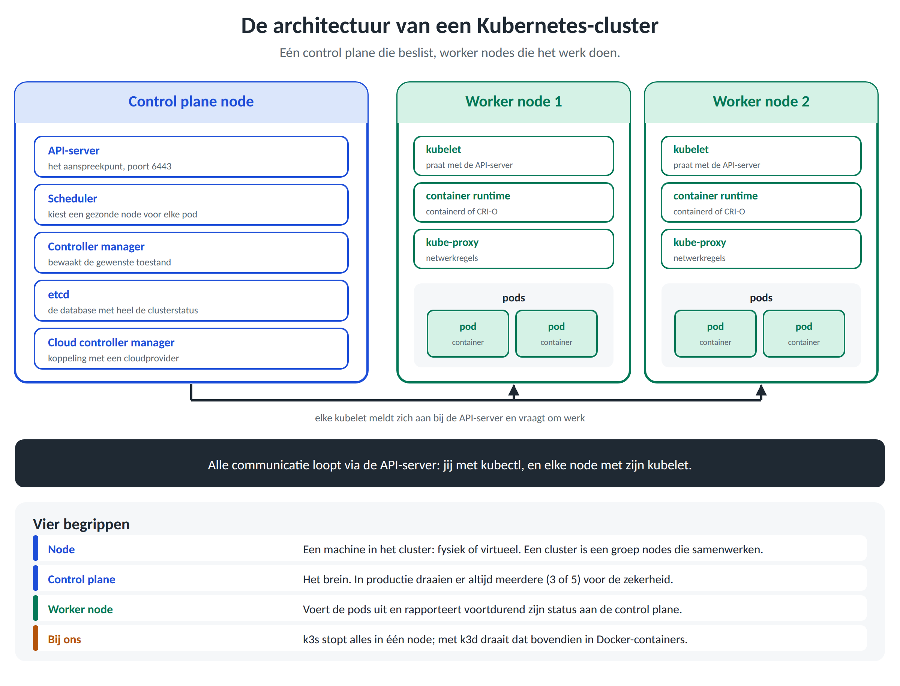
11.3.2 De control plane¶
De control plane is het brein van het cluster. Kubernetes is niet één programma, maar een verzameling diensten die samenwerken:
-
API-server: het centrale aanspreekpunt van het cluster. Alle communicatie loopt hierlangs: jouw kubectl-commando’s, maar evengoed de meldingen van de nodes en de andere onderdelen. Die praten onderling niet rechtstreeks met elkaar, alles passeert via de API-server. De API-server luistert standaard op poort 6443.
-
etcd: de database waarin de volledige configuratie en de toestand van het cluster bewaard worden.
-
Controller manager: een verzameling controllers die de werkelijke toestand van het cluster voortdurend vergelijken met de gewenste toestand en het verschil wegwerken. Staat er in je bestand replicas: 6 terwijl er maar vier kopieën draaien, dan is het een controller die er twee bijstart.
-
Scheduler: : kiest voor elke nieuwe pod een geschikte, gezonde node. De controller bepaalt dus dat er een pod bij moet, de scheduler waar die terechtkomt.
-
Cloud controller manager: de koppeling met een cloudprovider, bijvoorbeeld voor load balancers en opslag.
In een testopstelling volstaat één control plane node. In productie draaien er altijd meerdere (drie of vijf), zodat het cluster blijft werken als er één uitvalt. Op een control plane node draai je in principe geen gebruikersapplicaties.
11.3.3 De worker nodes¶
De worker nodes zijn de werkpaarden van het cluster. Zij hosten de applicaties. Een worker node vraagt voortdurend aan de API-server of er werk voor hem is, voert dat werk uit en rapporteert zijn status terug.
Op elke worker node draaien drie onderdelen:
-
kubelet: de agent die zich bij de API-server aanmeldt, nieuwe taken ontvangt en ervoor zorgt dat de containers van een pod correct draaien.
-
container runtime: de software die de containers effectief start en stopt. Kubernetes doet dat niet zelf: de kubelet geeft de opdracht door aan de runtime die op die node draait, meestal containerd of CRI-O.
-
kube-proxy: die zorgt voor de netwerkregels en stuurt het verkeer naar de juiste containers.
Vroeger praatte Kubernetes rechtstreeks met Docker. Vandaag gebruikt het containerd of CRI-O. containerd komt uit de kern van Docker en is later geschonken aan de Cloud Native Computing Foundation. Het is een algemene runtime, die ook buiten Kubernetes dienstdoet. CRI-O is van nul geschreven, met maar één doel: Kubernetes bedienen.
Op de worker nodes van een hedendaags cluster draait dus geen Docker meer. Daar staat containerd of CRI-O, en de kubelet praat daar rechtstreeks mee.
11.3.4 De gewenste toestand¶
Het is belangrijk om te begrijpen hoe die onderdelen samenwerken. Jij dient een beschrijving in van wat je wil: bijvoorbeeld drie kopieën van een webserver. Die beschrijving komt in etcd terecht als de gewenste toestand. De controllers vergelijken die onophoudelijk met de werkelijke toestand en grijpen in zodra er een verschil is.
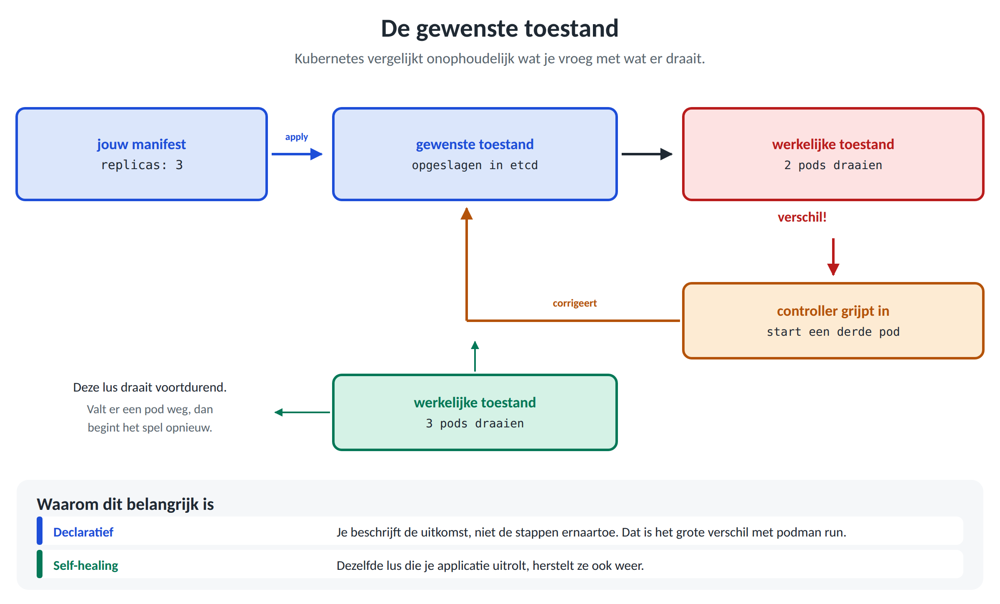
Dat is meteen ook de verklaring voor de self-healing waar Kubernetes om bekendstaat: het herstellen van een weggevallen pod is precies dezelfde lus als het uitrollen ervan.
11.3.5 k8s, k3s en k3d¶
Kubernetes wordt vaak afgekort tot k8s (acht letters tussen de k en de s). Een volledige k8s-installatie over meerdere machines valt buiten de doelstellingen van deze cursus. We werken met k3s, een lichtgewicht Kubernetes-distributie waarbij control plane en worker node op één machine mogen staan.
Concreet gebruiken we k3d. Dat is een hulpprogramma dat een k3s-cluster opstart in Docker-containers. Zo heb je in enkele seconden een cluster met meerdere nodes op één virtuele machine.
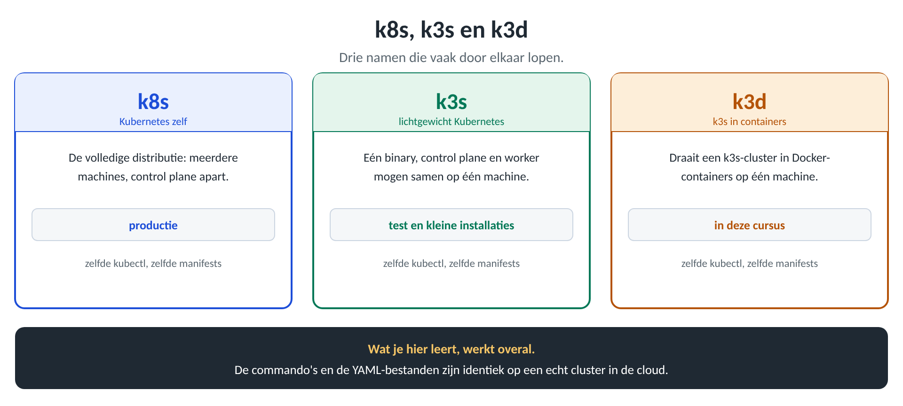
11.4 De bouwstenen¶
11.4.1 Overzicht¶
Kubernetes beheert geen containers rechtstreeks. Er zitten enkele lagen tussen, en elke laag voegt iets toe aan de laag eronder.
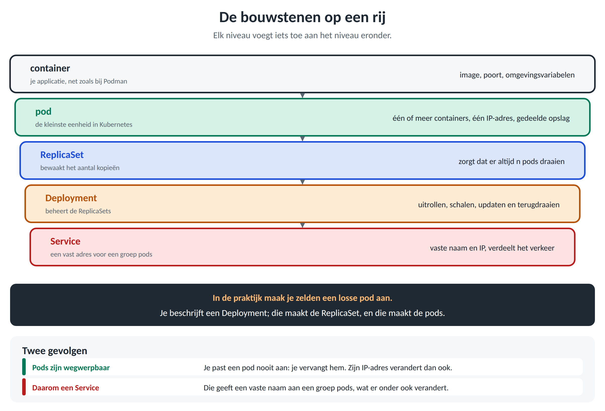
11.4.2 Pod¶
Een pod is de kleinste eenheid die je in Kubernetes kan beheren. Het is een afgeschermde omgeving waarin één of meer containers draaien. De pod zelf draait geen applicatie: de container doet dat. De pod regelt de omgeving eromheen.
Dit is vergelijkbaar met een pod in Podman. De containers in een pod delen:
-
de netwerkstack: ze hebben samen één IP-adres en bereiken elkaar via localhost;
-
de opslag die aan de pod gekoppeld is;
-
dezelfde node: containers van één pod draaien altijd samen op dezelfde machine.
In de regel geef je elke applicatie of microservice een eigen pod, zodat je ze apart kan schalen. Meerdere containers in één pod is voor gevorderde toepassingen, bijvoorbeeld een hulpcontainer naast de eigenlijke applicatie.
Een pod heeft een eindige levensduur en doorloopt daarbij een aantal statussen:
-
Pending: de pod is aangemaakt, maar de containers draaien nog niet.
-
Running: minstens één container draait.
-
Succeeded: alle containers zijn netjes beëindigd en worden niet opnieuw gestart.
-
Failed: minstens één container is met een fout gestopt.
-
Unknown: de status is niet te bepalen, meestal omdat de node onbereikbaar is.
Een bestaande pod pas je niet aan. Moet er iets wijzigen, dan verdwijnt de oude pod en komt er een nieuwe in de plaats, met een nieuw IP-adres. Onthoud dat goed: het verklaart waarom we verderop services nodig hebben.
11.4.3 ReplicaSet en Deployment¶
Een Deployment is de resource waarmee je een applicatie uitrolt, bijwerkt en beheert. Je geeft aan hoeveel pods er moeten draaien en welk image ze gebruiken; Kubernetes zorgt dat het aantal klopt.
Een Deployment doet dat niet zelf, maar via een ReplicaSet. Die telt de pods en start er een nieuwe zodra er één wegvalt. Dat is de self-healing. Bij een update maakt de Deployment een nieuwe ReplicaSet aan naast de oude, wat het mogelijk maakt om gecontroleerd te updaten en om terug te draaien.
In de praktijk maak je dus zelden een losse pod aan. Je beschrijft een Deployment, en de pods volgen vanzelf.
11.4.4 Service¶
Het netwerk binnen een cluster is plat: elke pod kan elke andere pod bereiken. Toch is het geen goed idee om pods rechtstreeks op hun IP-adres aan te spreken.
Stel dat een webserver-pod verbinding maakt met een database-pod via diens IP-adres. Zodra die database-pod herstart of vervangen wordt, krijgt hij een ander IP-adres en ligt de verbinding eruit. En draaien er meerdere kopieën van je webserver, dan heb je bovendien één adres nodig waarachter ze allemaal zitten.
Daarvoor dient een Service: een vast aanspreekpunt voor een groep pods. Een Service heeft een vast IP-adres binnen het cluster, een vaste DNS-naam en één of meer poorten. Welke pods erachter zitten, bepaalt de Service aan de hand van labels.
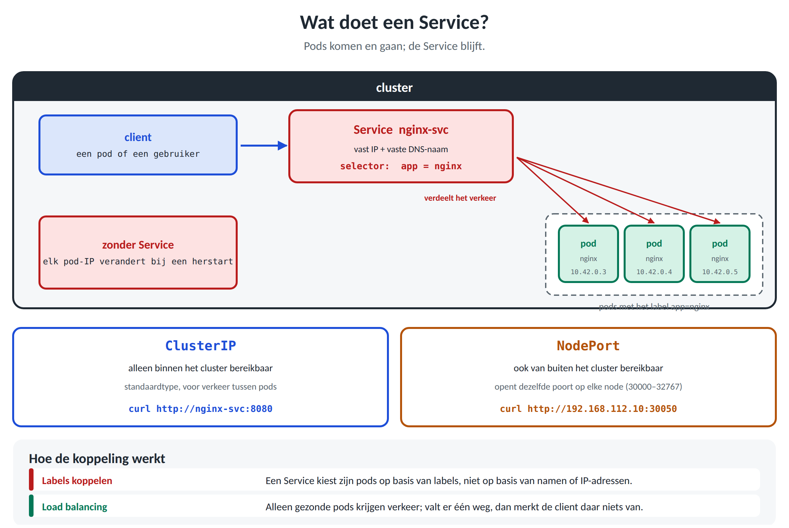
Een Service bestaat in drie types:
-
ClusterIP: het standaardtype, enkel binnen het cluster bereikbaar.
-
NodePort: opent dezelfde poort op elke node, zodat de dienst ook van buitenaf bereikbaar is.
-
LoadBalancer: vraagt een extern IP-adres aan bij de omgeving waarin het cluster draait. Bij een cloudprovider krijg je een echt extern adres; k3s lost het zelf op met een ingebouwde loadbalancer.
11.4.5 Wat er nog meer is¶
Een cluster bevat nog heel wat andere objecten. Je hoeft ze nu niet te kennen, maar het helpt om de namen al eens gezien te hebben:
-
Namespaces: om objecten te groeperen en van elkaar te scheiden.
-
ConfigMaps en Secrets: voor configuratie en wachtwoorden.
-
PersistentVolumeClaims: voor opslag die een pod overleeft.
-
Ingress: stuurt inkomend webverkeer op poort 80 en 443 naar de juiste Service, op basis van de domeinnaam of het pad. Zo delen meerdere websites één adres, zonder voor elke dienst een aparte NodePort.
11.5 Werken met kubectl¶
Het cluster zelf beheer je met k3d: aanmaken, stoppen, nodes toevoegen.
Alles wat je daarna ín het cluster doet, gaat via kubectl. Dat is het standaardhulpmiddel om met een cluster te werken. De opbouw is altijd dezelfde:
kubectl [commando] [type] [naam] [opties]
Enkele voorbeelden:
kubectl get pods
kubectl get pod nginx-pod2 -o wide
kubectl describe pod nginx-pod2
kubectl delete pod nginx-pod2
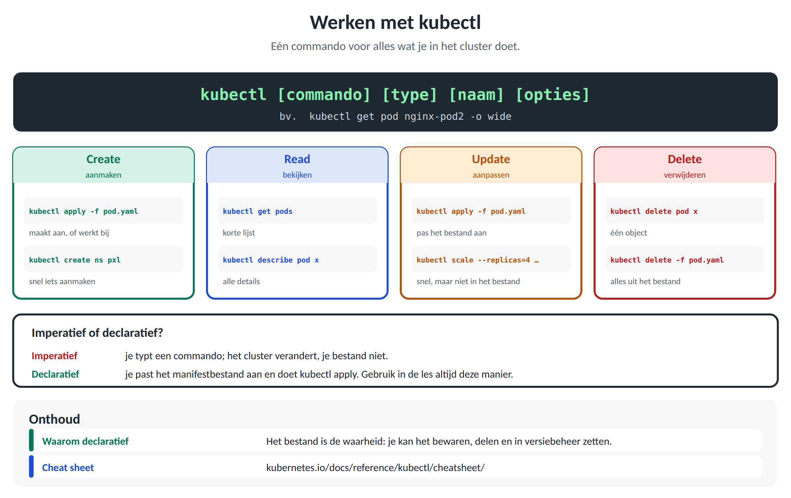
Objecten kan je op twee manieren aanmaken:
-
imperatief: je typt een commando, bijvoorbeeld kubectl run of kubectl scale. Dat gaat snel, maar de wijziging staat enkel in het cluster.
-
declaratief: je schrijft een manifestbestand in YAML en voert kubectl apply -f uit. Het bestand beschrijft de gewenste toestand.
Tab completion werkt standaard niet in RHEL voor kubectl. Je kan tab completion als volgt instellen.
student@virt-K8s-XX:~$ source /usr/share/bash-completion/bash_completion
student@virt-K8s-XX:~$ source <(kubectl completion bash)
student@virt-K8s-XX:~$ echo 'source <(kubectl completion bash)' >> ~/.bashrc
Wij werken steeds declaratief. De reden is eenvoudig: het bestand is de waarheid. Pas je het cluster imperatief aan, dan loopt het uit de pas met je bestand, en bij de volgende apply wordt je wijziging weer ongedaan gemaakt.
Een manifestbestand heeft altijd dezelfde vier onderdelen:
-
apiVersion: welke versie van de API je aanspreekt.
-
kind: welk soort object je maakt.
-
metadata: onder meer de naam en de labels.
-
spec: hoe het object er moet uitzien.
Let op de inspringing: net als bij compose.yml gebruik je spaties, nooit tabs.
Let ook op de naam van je objecten: die mag enkel kleine letters, cijfers en streepjes bevatten. Zet je er een hoofdletter in, dan weigert kubectl apply het bestand.
Gebruik die naam daarna ook in je commando's exact zoals hij in het bestand staat. Typ je hem met hoofdletters, dan lijken opdrachten als exec en port-forward gewoon te werken, maar verwijderen lukt niet meer: de pod blijft dan in de toestand Terminating staan en elk volgend commando erover loopt in een timeout.
11.6 Aan de slag¶
We zetten nu een cluster op en rollen er een website in uit. Onderstaande stappen volgen elkaar op; voer ze in volgorde uit.
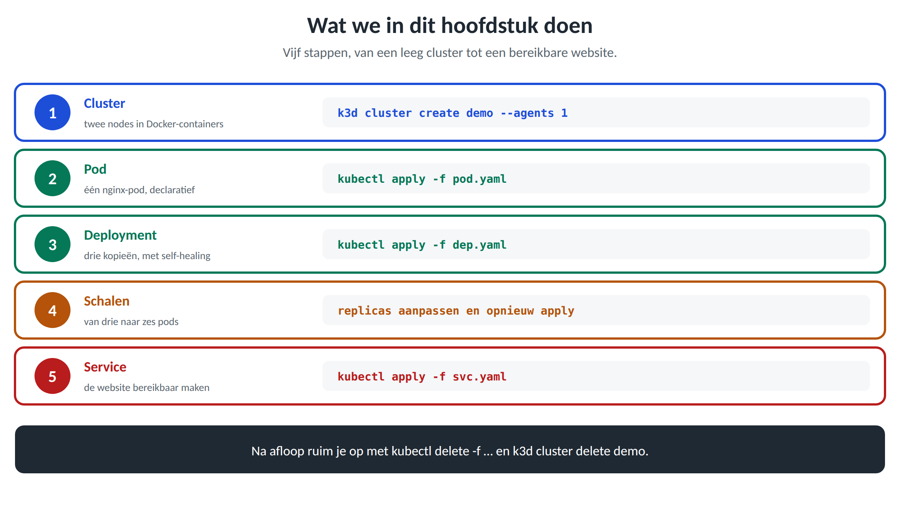
11.6.1 Vooraf: de virtuele machine¶
Maak een nieuwe RHEL 10 VM aan die aan volgende eisen voldoet:
-
Verbind met Red Hat;
-
Installatiebestemming: automatisch;
-
Software selectie: server (geen GUI dus);
-
Hostname virt-K8s-XX (XX zijn je initialen);
-
Gebruiker student met wachtwoord PXL;
-
Statisch IP-adres 192.168.112.10;
-
Bereikbaar via SSH.
Op virt-K8s-XX installeren we drie dingen: Docker, k3d en kubectl. Onderstaande figuur laat zien waarom. k3d draait elke node van je cluster als een container en daarvoor heeft het Docker nodig. Met kubectl bedien je daarna alles wat in dat cluster draait.
Wat je niet zal installeren is Kubernetes zelf. Dat hoef je hier namelijk niet te installeren: in de containers die k3d aanmaakt, zit k3s, een afgeslankte Kubernetes in één programma. k3d haalt dat kant-en-klaar op. Op een echt cluster gaat het omgekeerd: daar installeer je Kubernetes of k3s op elke machine, en valt k3d weg. Alleen kubectl blijft in alle gevallen hetzelfde.
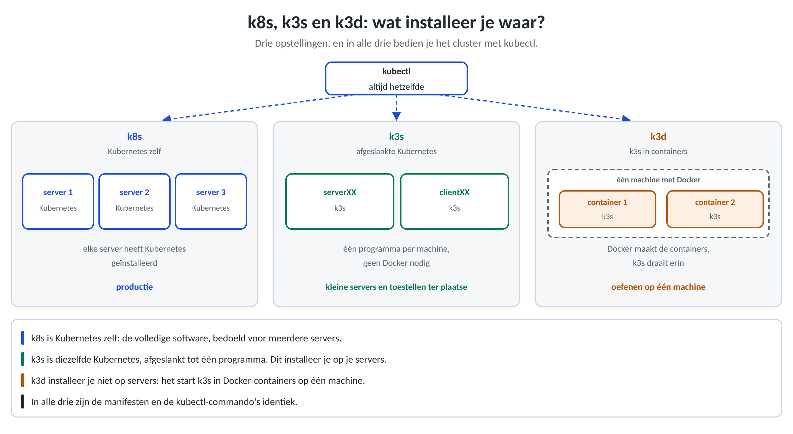
Na Docker voegen we student toe aan de groep docker: k3d geeft zijn opdrachten rechtstreeks aan de Docker-daemon, en alleen root en de leden van die groep mogen daarbij. Een nieuw groepslidmaatschap geldt pas bij een nieuwe aanmelding, sessies die al openstaan zien het niet. Met newgrp docker start je meteen een shell waarin het wel actief is, zodat je hier gewoon kunt verdergaan. Krijg je in een andere, al geopende sessie een permission-fout op de Docker-socket, meld je dan opnieuw aan (bv. een nieuwe SSH-verbinding).
Installatie docker:
student@virt-K8s-XX:~$ sudo dnf config-manager --add-repo https://download.docker.com/linux/centos/docker-ce.repo
student@virt-K8s-XX:~$ sudo dnf install -y docker-ce docker-ce-cli containerd.io
student@virt-K8s-XX:~$ sudo systemctl enable --now docker
Toegang tot de socket:
student@virt-K8s-XX:~$ sudo usermod -aG docker $USER
student@virt-K8s-XX:~$ newgrp docker
Installeer nu k3d:
student@virt-K8s-XX:~$ wget -q -O - https://raw.githubusercontent.com/k3d-io/k3d/main/install.sh | bash
…
k3d installed into /usr/local/bin/k3d
…
En tot slot kubectl:
student@virt-K8s-XX:~$ sudo tee /etc/yum.repos.d/kubernetes.repo <<'EOF'
[kubernetes]
name=Kubernetes
baseurl=https://pkgs.k8s.io/core:/stable:/v1.34/rpm/
enabled=1
gpgcheck=1
gpgkey=https://pkgs.k8s.io/core:/stable:/v1.34/rpm/repodata/repomd.xml.key
EOF
student@virt-K8s-XX:~$ sudo dnf install -y kubectl
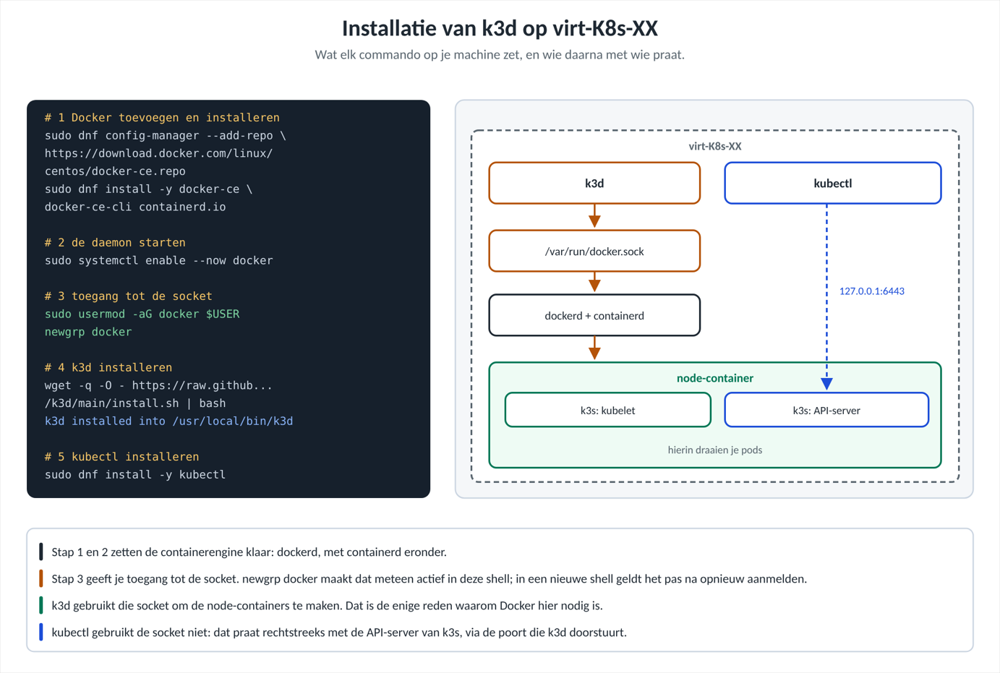
11.6.2 Stap 1: een cluster aanmaken¶
We maken een cluster met één server node (de control plane) en één agent node (de worker).
student@virt-K8s-XX:~$ k3d cluster create demo --servers 1 --agents 1
Controleer daarna welke nodes er draaien:
student@virt-K8s-XX:~$ kubectl get nodes
NAME STATUS ROLES AGE VERSION
k3d-demo-agent-0 Ready <none> 12s v1.35.5+k3s1
k3d-demo-server-0 Ready control-plane 16s v1.35.5+k3s1
Je ziet twee nodes: één control plane en één worker. Voor kubectl is dit een gewoon cluster. Dat die twee nodes in werkelijkheid Docker-containers op je eigen machine zijn, blijkt nergens uit de uitvoer — enkel de namen verraden dat k3d ze heeft aangemaakt.
11.6.3 Stap 2: een pod¶
We maken een manifestbestand voor één pod met een nginx-webserver. Let op de spaties.
student@virt-K8s-XX:~$ code pod.yaml
apiVersion: v1
kind: Pod
metadata:
name: nginx-pod
labels:
app: nginx
spec:
containers:
- name: nginx
image: nginx
ports:
- containerPort: 80
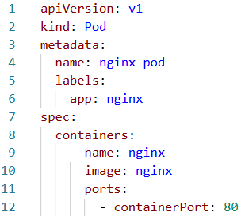
Regel 1 — apiVersion: v1
In welke versie van de API dit object beschreven is. Een Pod zit in de kerngroep, en die heeft geen naam: daarom staat er enkel v1. Een Deployment zou hier apps/v1 hebben.
Regel 2 — kind: Pod
Welk soort object je wil. Dit bepaalt welke velden er verderop in spec mogen staan.
Regel 3 — metadata:
Het begin van het blok met de gegevens die het object identificeren. De dubbele punt zonder waarde betekent: wat hierna ingesprongen staat, hoort hierbij.
Regel 4 — name: nginx-pod
De naam van de pod in het cluster. Die moet uniek zijn binnen de namespace, en je gebruikt hem in commando’s als kubectl describe pod nginx-pod.
Regel 5 — labels:
Het begin van de etiketten. Labels zijn vrij te kiezen sleutel-waardeparen die je op een object plakt.
Regel 6 — app: nginx
Het etiket zelf. Dit lijkt overbodig, maar het is het haakje waarmee een Service deze pod later terugvindt: in het Service-manifest staat selector: app: nginx. Zonder dit label hoort de pod bij geen enkele Service.
Regel 7 — spec:
Vanaf hier beschrijf je hoe het object er moet uitzien. Bij een Pod gaat dat over de containers.
Regel 8 — containers:
Het begin van een lijst. Een pod kan meerdere containers bevatten, dus het is een lijst en geen enkele waarde.
Regel 9 — - name: nginx
Het streepje markeert een item in die lijst: hier begint de eerste container. name is de naam van de container binnen de pod — niet van de pod zelf. Alles wat onder dit streepje ingesprongen staat, hoort bij deze ene container.
Regel 10 — image: nginx
Welk image gebruikt wordt. Dit is een korte naam; Kubernetes vult hem aan tot docker.io/library/nginx:latest. In een cursus of in productie schrijf je hem beter voluit, met een vast versienummer in plaats van latest.
Regel 11 — ports:
Opnieuw het begin van een lijst, deze keer van poorten.
Regel 12 — - containerPort: 80
De poort waarop het proces in de container luistert. Let op: deze regel opent niets en publiceert niets. Het is documentatie voor wie het bestand leest; het echte verkeer loopt via de targetPort van een Service.
Sla het bestand op door <Ctrl> + S te typen.
Rol de pod uit en bekijk het resultaat:
student@virt-K8s-XX:~$ kubectl apply -f pod.yaml
pod/nginx-pod created
student@virt-K8s-XX:~$ kubectl get pods -o wide
NAME READY STATUS RESTARTS AGE IP NODE NOMINATED NODE READINESS GATES
nginx-pod 1/1 Running 0 15s 10.42.0.5 k3d-demo-agent-0 <none> <none>
De pod draait (je moet hier wel even voor wachten), heeft een eigen IP-adres gekregen en is op de worker node terechtgekomen.
NOMINATED NODE heeft te maken met voorrang: moet een pod met hoge prioriteit wachten, dan duidt de scheduler alvast een node aan waar hij terechtkomt. READINESS GATES zijn extra voorwaarden die je in een pod kan opgeven voor hij als klaar geldt. Geen van beide speelt hier een rol, vandaar twee keer <none>.
Met describe zie je alle details, onder meer de gebeurtenissen die tot de start geleid hebben:
student@virt-K8s-XX:~$ kubectl describe pod nginx-pod
Je kan ook een commando uitvoeren in de container van de pod. Alles na de twee streepjes wordt in de container (er is hier maar één) uitgevoerd:
student@virt-K8s-XX:~$ kubectl exec -it nginx-pod -- bash
root@nginx-pod:/# exit
Zitten er meerdere containers in, dan neemt kubectl de eerste uit het manifest tenzij je de container expliciet op met -c aangeeft.
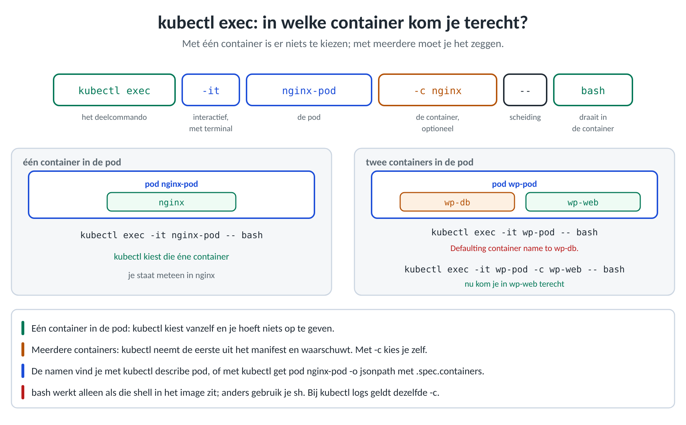
Verwijder de pod weer. Hij blijft weg: een losse pod heeft geen controller die over hem waakt. Zoiets maak je pas met een Deployment, en dat is het volgende dat we bekijken.
student@virt-K8s-XX:~$ kubectl delete pod nginx-pod
pod "nginx-pod" deleted
11.6.4 Stap 3: een deployment¶
Een losse pod is dus kwetsbaar. We maken nu een deployment aan die drie kopieën van dezelfde webserver bewaakt.
student@virt-K8s-XX:~$ code dep.yaml
apiVersion: apps/v1
kind: Deployment
metadata:
name: nginx-deployment
spec:
replicas: 3
selector:
matchLabels:
app: nginx
template:
metadata:
labels:
app: nginx
spec:
containers:
- name: nginx
image: nginx:latest
ports:
- containerPort: 80
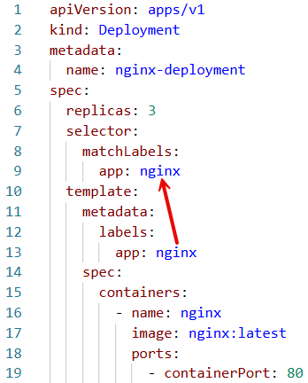
Regel 1 — apiVersion: apps/v1
Een Deployment zit niet in de kerngroep maar in de groep apps, en daarom staat de groepsnaam erbij. Bij de pod van daarnet volstond v1.
Regel 2 — kind: Deployment
Welk soort object. Dit bepaalt welke velden er in spec mogen staan — bij een Deployment zijn dat andere dan bij een Pod.
Regel 3 — metadata:
De gegevens die dit object identificeren.
Regel 4 — name: nginx-deployment
De naam van de Deployment. Let op: de pods die eruit voortkomen heten anders. Die krijgen deze naam met twee willekeurige stukken erachter, bijvoorbeeld nginx-deployment-7c79c4bf97-k2xqm.
Regel 5 — spec:
Vanaf hier beschrijf je wat de Deployment moet doen.
Regel 6 — replicas: 3
Hoeveel kopieën van de pod er moeten draaien. Dit is de gewenste toestand: valt er één weg, dan start de ReplicaSet er vanzelf een nieuwe. Dit getal is ook wat je aanpast om te schalen.
Regel 7 — selector:
Hier geef je aan welke pods bij deze Deployment horen. Een Deployment beheert namelijk geen pods omdat hij ze gemaakt heeft, maar omdat hun labels overeenkomen.
Regel 8 — matchLabels:
De manier waarop die selectie gebeurt: alle pods met de labels die hieronder staan.
Regel 9 — app: nginx:
Het label waarop geselecteerd wordt.
Regel 10 —Het deel onder template is een pod-template: het beschrijft hoe elke pod eruit moet zien. Je hebt dus geen apart podbestand meer nodig. De selector bepaalt welke pods bij deze deployment horen en moet overeenkomen met de labels in de template.
Sla het bestand op door <Ctrl> + S te typen.
student@virt-K8s-XX:~$ kubectl apply -f dep.yaml
deployment.apps/nginx-deployment created
student@virt-K8s-XX:~$ kubectl get deployment
NAME READY UP-TO-DATE AVAILABLE AGE
nginx-deployment 3/3 3 3 35s
student@virt-K8s-XX:~$ kubectl get pods
NAME READY STATUS RESTARTS AGE
nginx-deployment-59f86b59ff-6kjpg 1/1 Running 0 30s
nginx-deployment-59f86b59ff-hl5gh 1/1 Running 0 30s
nginx-deployment-59f86b59ff-xw8rn 1/1 Running 0 30s
De kolom READY toont hoeveel pods klaar zijn van het aantal dat je gevraagd hebt, AVAILABLE hoeveel er effectief beschikbaar zijn.
Test nu de self-healing door zelf een pod te verwijderen:
student@virt-K8s-XX:~$ kubectl delete pod nginx-deployment-59f86b59ff-6kjpg
pod "nginx-deployment-59f86b59ff-6kjpg" deleted from default namespace
student@virt-K8s-XX:~$ kubectl get pods
NAME READY STATUS RESTARTS AGE
nginx-deployment-59f86b59ff-8jtwq 1/1 Running 0 18s
nginx-deployment-59f86b59ff-hl5gh 1/1 Running 0 2m34s
nginx-deployment-59f86b59ff-xw8rn 1/1 Running 0 2m34s
Er staan opnieuw drie pods, maar aan de kolom AGE zie je dat er één pas gestart is. De ReplicaSet heeft de weggevallen pod meteen vervangen: dat is de self-healing.
11.6.5 Stap 4: schalen¶
Schalen doe je door het aantal replicas aan te passen in het manifestbestand en het opnieuw toe te passen. Zet replicas op 6:
student@virt-K8s-XX:~$ code dep.yaml … spec: replicas: 6 …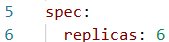
Sla het bestand op door <Ctrl> + S te typen.
student@virt-K8s-XX:~$ kubectl apply -f dep.yaml
deployment.apps/nginx-deployment configured
student@virt-K8s-XX:~$ kubectl get deployment
NAME READY UP-TO-DATE AVAILABLE AGE
nginx-deployment 6/6 6 6 8m
Kubernetes herkent aan de naam dat het om dezelfde deployment gaat en past enkel aan wat gewijzigd is. Merk op dat er created stond bij de eerste apply en configured bij de tweede.
Hetzelfde kan imperatief met kubectl scale, maar dan loopt je bestand uit de pas. Doe dat dus niet.
11.6.6 Stap 5: een service¶
De pods draaien, maar niemand kan ze bereiken. We zetten er een service voor, van het type NodePort.
student@virt-K8s-XX:~$ code svc.yaml
apiVersion: v1
kind: Service
metadata:
name: nginx-svc
spec:
type: NodePort
selector:
app: nginx
ports:
- port: 8080
targetPort: 80
nodePort: 30050
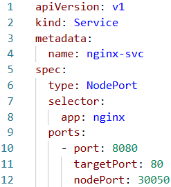
Regel 1 — apiVersion: v1
Een Service zit in de kerngroep, dus geen groepsnaam. Dat is meteen het verschil met de Deployment van daarnet, die apps/v1 had.
Regel 2 — kind: Service
Het soort object.
Regel 3 — metadata:
De gegevens die de Service identificeren.
Regel 4 — name: nginx-svc
De naam van de Service. Die is hier meer dan een etiket: het is ook de DNS-naam binnen het cluster. Een andere pod bereikt deze dienst met http://nginx-svc:8080.
Regel 5 — spec:
Hoe de Service er moet uitzien.
Regel 6 — type: NodePort
Het soort Service. NodePort opent dezelfde poort op elke node, zodat je de dienst ook van buiten het cluster bereikt. Laat je deze regel weg, dan krijg je ClusterIP en is de dienst enkel intern bereikbaar. Belangrijk: een NodePort-service houdt daarnaast gewoon zijn ClusterIP — het type voegt iets toe, het vervangt niets.
Regel 7 — selector:
Welke pods achter deze Service zitten.
Regel 8 — app: nginx
Het label waarop geselecteerd wordt. Dit moet overeenkomen met de labels in de template van je Deployment, niet met de naam van de Deployment of van de pods. De Service weet dus niet van het bestaan van je Deployment af: ze zoekt enkel pods met dit etiket, van waar die ook komen.
Regel 9 — ports:
De lijst met poorten die deze Service aanbiedt.
Regel 10 — - port: 8080
Het streepje opent het eerste item van die lijst. port is de poort van de Service zelf, op het ClusterIP. Dit is het nummer dat andere pods gebruiken: nginx-svc:8080.
Regel 11 — targetPort: 80
De poort in de pod waar het verkeer naartoe gaat, dus de poort waarop nginx luistert. Let op de inspringing: deze regel staat onder het streepje en hoort dus bij hetzelfde item. Laat je targetPort weg, dan gebruikt Kubernetes dezelfde waarde als port, en dan klopt het hier niet meer.
Regel 12 — nodePort: 30050
De poort die op elke node opengaat voor verkeer van buitenaf. Dit mag enkel bij het type NodePort, en het nummer moet in het bereik 30000-32767 liggen. Laat je de regel weg, dan kiest Kubernetes zelf een vrij nummer.
De drie poorten horen bij de drie stappen die een verzoek aflegt, van buiten het cluster tot in de container:
buiten → node:30050 → Service:8080 → pod:80
-
nodePort (30050) is waar het verkeer het cluster binnenkomt, op het IP-adres van gelijk welke node. Deze poort bestaat alleen bij het type NodePort. Kubernetes beperkt ze tot het bereik 30000-32767, zodat ze niet in de weg zit van gewone diensten op de node.
-
port (8080) is de poort van de Service zelf, op het ClusterIP. Dit is wat andere pods gebruiken wanneer ze http://nginx-svc:8080 aanspreken. Een NodePort-service heeft dus ook een ClusterIP: het type voegt iets toe, het vervangt niets.
-
targetPort (80) is de poort van de container in de pods die deze Service via zijn selector heeft uitgekozen. Daar eindigt het verkeer.
Let op de selector: die verwijst naar het label app: nginx uit de pod-template van de deployment. Zo weet de service welke pods erbij horen.
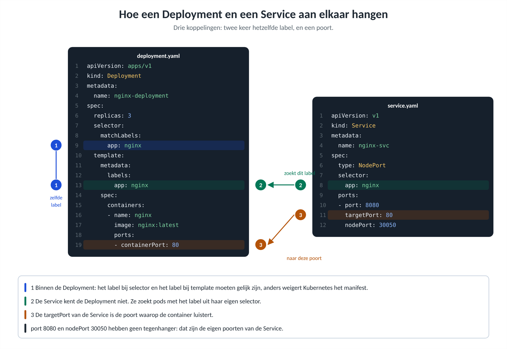
Sla het bestand op door <Ctrl> + S te typen.
student@virt-K8s-XX:~$ kubectl apply -f svc.yaml
service/nginx-svc created
student@virt-K8s-XX:~$ kubectl get svc -o wide
NAME TYPE CLUSTER-IP EXTERNAL-IP PORT(S) AGE SELECTOR
kubernetes ClusterIP 10.43.0.1 <none> 443/TCP 24m <none>
nginx-svc NodePort 10.43.216.108 <none> 8080:30050/TCP 8s app=nginx
De service kubernetes heb je niet zelf gemaakt: die bestaat in elk cluster. De kolom EXTERNAL-IP blijft leeg; alleen een LoadBalancer krijgt daar een adres.
Een NodePort opent poort 30050 op elke node. Bij k3d zijn die nodes containers, en dus staat die poort open op de containers, niet op virt-K8s-XX zelf. Jouw virtuele machine is immers geen node: ze is de machine waarop die node-containers draaien. Vandaar dat curl localhost:30050 hier niets oplevert, en dat je de pagina ook niet in je browser op de Windows-host te zien krijgt.
student@virt-K8s-XX:~$ curl localhost:30050
curl: (7) Failed to connect to localhost port 30050 after 0 ms: Could not connect to server
We lossen dat op met een port-forward:
student@virt-K8s-XX:~$ kubectl port-forward svc/nginx-svc 30050:8080 &
Forwarding from 127.0.0.1:30050 -> 80
student@virt-K8s-XX:~$ curl localhost:30050
Handling connection for 30050
<!DOCTYPE html>
<html>
<head>
<title>Welcome to nginx!</title>
…
De pagina komt binnen. Voer het commando enkele keren na elkaar uit: de service verdeelt het verkeer over de zes pods, en jij merkt daar niets van.
De & op het einde zet de port-forward op de achtergrond, zodat je in dezelfde terminal verder kan werken. Hij blijft wel draaien. Met jobs zie je welke taken er op de achtergrond staan, en met kill %1 stop je de eerste.
student@virt-K8s-XX:~$ jobs
[1]+ Running kubectl port-forward svc/nginx-svc 30050:8080 &
student@virt-K8s-XX:~$ kill %1
Vergeet je dat, dan blijft die verbinding openstaan en blijft poort 30050 bezet. Een volgende port-forward op dezelfde poort mislukt dan met de melding address already in use.
Bij een echte Kubernetes-installatie is die port-forward niet nodig. Dan bereik je de dienst rechtstreeks via het IP-adres van eender welke node, op poort 30050.
11.6.7 Opruimen¶
Verwijder de objecten en tot slot het cluster zelf:
student@virt-K8s-XX:~$ kubectl delete -f svc.yaml -f dep.yaml
student@virt-K8s-XX:~$ k3d cluster delete demo
Merk op dat het verwijderen van een deployment ook al zijn pods verwijdert, en dat het verwijderen van het cluster alles wist wat erin zat.
11.7 Hoe het verder gaat¶
Wat je in dit hoofdstuk gezien hebt, is de kern van Kubernetes: een cluster van nodes, objecten die je declaratief beschrijft, en controllers die de gewenste toestand bewaken. Alles wat daarna komt, bouwt daarop verder:
-
namespaces om resources van verschillende teams of omgevingen binnen één cluster te scheiden;
-
rolling updates en rollback om een nieuwe versie stap voor stap uit te rollen en terug te draaien als het misloopt;
-
ConfigMaps en Secrets om configuratie en wachtwoorden buiten je image te houden;
-
PersistentVolumes en PersistentVolumeClaims voor gegevens die een pod moeten overleven;
-
Ingress om meerdere websites achter één adres en één certificaat te plaatsen;
-
Helm om complete applicaties als één pakket te installeren.
De commando's en de manifestbestanden die je hier geleerd hebt, blijven daarbij ongewijzigd. Wie met k3d overweg kan, kan ook met een beheerd cluster bij een cloudprovider overweg.